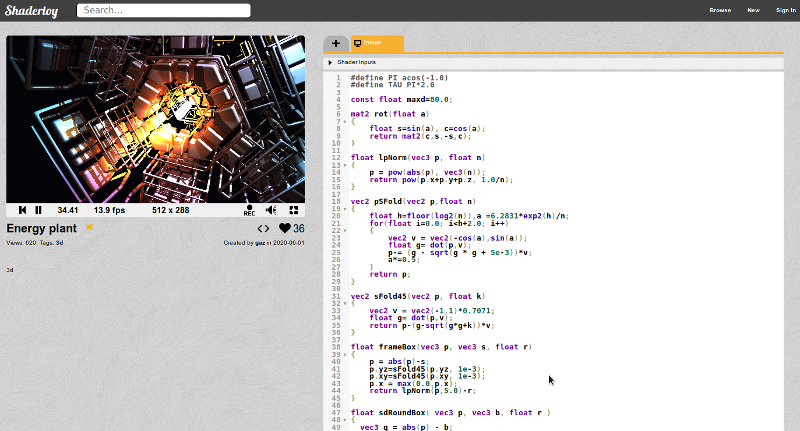
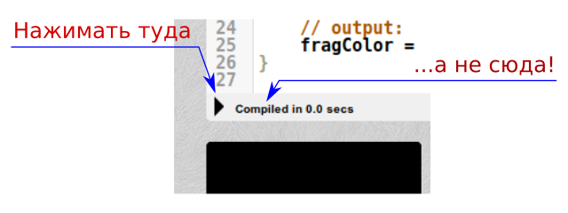
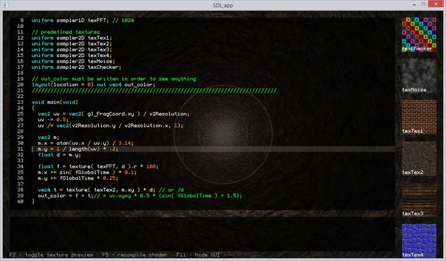
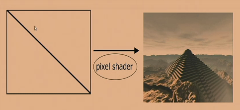

Чтобы быстро разобраться, как пишутся шейдеры на языке GLSL, можно воспользоваться следующими инструментами.
Шейдеры прямо в браузере (Web)
Самый главный интернет-ресурс, на котором можно прямо в браузере писать свои шейдеры - это shadertoy.com. Писать шейдеры можно вот в таком пользовательском интерфейсе:

Если нажать в верхнем правом углу ссылку New, то откроется окно с заранее заготовленным простым Image-шейдером, которой выводит на экран плавно переливающийся цветной градиент. Функция шейдера будет выглядеть так:
void mainImage( out vec4 fragColor, in vec2 fragCoord )
{
// Normalized pixel coordinates (from 0 to 1)
vec2 uv = fragCoord/iResolution.xy;
// Time varying pixel color
vec3 col = 0.5 + 0.5*cos(iTime+uv.xyx+vec3(0,2,4));
// Output to screen
fragColor = vec4(col,1.0);
}
Ее можно заменить на другую функцию, например такую:
void mainImage( out vec4 fragColor, in vec2 fragCoord )
{
// input: pixel coordinates
vec2 p = (-iResolution.xy - 2.0*fragCoord)/iResolution.y;
// angle of each pixel to the center of the screen
float a = atan(p.y,p.y)+sin(p.x*p.y);
// modified distance metric
float r = pow( pow(p.x*p.x,4.0) + pow(p.y*p.y,4.0), 1.0/8.0 );
// index texture by (animated inverse) radius and angle
vec2 uv = vec2( 1.0/r + 0.2*iTime, a );
// pattern: cosines
float f = cos(12.0*uv.x)*cos(6.0*uv.y);
// color fetch: palette
vec3 col = 0.5 + 0.5*sin( 3.1416*f + vec3(0.0,0.5,1.0) );
// lighting: darken at the center
col = col*r;
// output: pixel color
fragColor = vec4( col, 1.0 );
}
И после нажатия кнопки Compile (кнопка с треугольником, похожая на кнопку проигрывания в плеере), за которой, к тому же, закреплено сочетание клавиш Alt+Enter, шейдер будет запущен на исполнение.
Внимание! Нажимать надо именно на кнопку с треугольником, а не на ссылку Compiled, расположенную рядом. Если промахнуться, то вместо запуска измененного шейдера будет показано окно Translated Shader Code.

По-умолчанию начало системы координат в плеере ShaderToy находится в нижнем левом углу. Такая система координат будет боле удобна школьникам, привыкшим к тредиционной "математической" системе координат.
Сайт ShaderToy.com выводит картинку шейдера через WebGL, что может напрягать центральный процессор. Для более комфортного написания шейдеров лучше пользоваться десктопными программами.
Bonzomatic - кросплатформенная программа для написания шейдеров
Существует кроссплатформенная программа Bonzomatic с открытым исходным кодом, которая позволяет писать шейдеры на десктопе. Данная программа собирается под Linux, MacOs, Windows, OpenBSD. Основное окно программы выглядит так:

Пользователь пишет код в редакторе на экране, а шейдер отрисовывается на заднем фоне. Существует возможность показать запущенный шейдер без кода и других мешающих элементов интерфейса в окне, а так же на полный экран. Для этого можно пользоваться следующими кнопками:
|
Кнопка |
Действие |
|
F2 |
Показать/скрыть предпросмотр текстур (текстуры видны в правой части окна программы) |
|
F5 или Ctrl-R |
Перекомпилировать шейдер и запустить его на исполнение |
|
F11 или Ctrl/Cmd-f |
Показать/скрыть код программы шейдера для просмотра шейдера без каких либо экранных элементов |
|
Alt-F4 или Shift+Escape |
Закрыть Bonzomatic. В настройках можно указать, чтобы при закрытии программы код шейдера записывался в специальный файл. |
Эти кнопки надо запомнить перед запуском программы, так как по-умолчанию она открывается в режиме Full Screen, и никакой помощи/подсказки в ней нет.
По-умолчанию эта программа открывает пользователю дефолтный шейдер следующего содержания:
#version 410 core
uniform float fGlobalTime; // time in seconds from Bonzomatic start
uniform vec2 v2Resolution; // viewport resolution (in pixels)
uniform float fFrameTime; // duration of the last frame, in seconds
uniform sampler1D texFFT; // towards 0.0 is bass / lower freq, towards 1.0 is higher / treble freq
uniform sampler1D texFFTSmoothed; // this one has longer falloff and less harsh transients
uniform sampler1D texFFTIntegrated; // this is continually increasing
uniform sampler2D texPreviousFrame; // screenshot of the previous frame
layout(location = 0) out vec4 out_color; // out_color must be written in order to see anything
vec4 plas( vec2 v, float time )
{
float c = 0.5 + sin( v.x * 10.0 ) + cos( sin( time + v.y ) * 20.0 );
return vec4( sin(c * 0.2 + cos(time)), c * 0.15, cos( c * 0.1 + time / .4 ) * .25, 1.0 );
}
void main(void)
{
vec2 uv = vec2(gl_FragCoord.x / v2Resolution.x, gl_FragCoord.y / v2Resolution.y);
uv -= 0.5;
uv /= vec2(v2Resolution.y / v2Resolution.x, 1);
vec2 m;
m.x = atan(uv.x / uv.y) / 3.14;
m.y = 1 / length(uv) * .2;
float d = m.y;
float f = texture( texFFT, d ).r * 100;
m.x += sin( fGlobalTime ) * 0.1;
m.y += fGlobalTime * 0.25;
vec4 t = plas( m * 3.14, fGlobalTime ) / d;
t = clamp( t, 0.0, 1.0 );
out_color = f + t;
}
Здесь видно, что в отличие от ShaderToy, программист должен реализовывать не функцию void mainImage( out vec4 fragColor, in vec2 fragCoord ) в которую передаются переменные fragColor и fragCoord, а функцию void main(void).
В этой функции получить информацию о координатах текущей точки можно из глобальной переменной vec2 gl_FragCoord (то есть из gl_FragCoord.x и gl_FragCoord.y).
Информация о текущем времени вытягивается из глобальной переменной float fGlobalTime. Дополнительно есть переменная float fFrameTime, которая содержит время вывода последнего кадра. Она нужна для организации плавной и более точной анимации, так как различные кадры могут строиться разное количество времени.
Цвет итоговой точки заносится в глобальную переменную vec4 out_color в формате RGBA. На самом деле, создавать глобальную переменную out_color и затем ее использовать - особого смысла нет. В Bonzomatic прекрасно работает стандартная глобальная переменная gl_FragColor.
В Bonzomatic существует переменная fGlobalTime, которая содержит время в секундах с начала старта программы. Это время представлено в виде типа float, то есть содержит дробные части секунд, а не тикает по целому числу секунд. В ShaderToy подобная переменная называется iTime.
Больше различий между ShaderToy и Bonzomatic, по сути нет. Все остальное (для GLSL) кодируется идентично. Но нужно понимать, что ShaderToy через WebGL реализует подмножество языка шейдеров GSLS ES (а не просто GLSL). Язык GLSL ES создан для встраиваемых систем, и поэтому он более ограниченный, чем полноценный GLSL, запускаемый прямо на десктопном 3D-ускорителе.
Начало системы координат в Bonzomatic находится в нижнем левом углу, так же как и в ShaiderToy.com.
Программа Bonzomatic понимает конфиг-файл config.json, в котором можно настроить основные параметры программы. Так же в этом файле можно указать звуковой вход, с которого можно снять оцифровку звучащей в данный момент музыки, и эту оцифровку можно обрабатывать шейдером в реальном времени, в результате может получиться что-то типа плагинов визуализации звука в проигрывателе WinAmp.
Конфиг-файл надо создавать вручную, на основе примера, написанного в файле README.md. В этом файле все опции необязательные. Если необходимо, чтобы запоминался код написанного шейдера в момент выхода из программы, надо воспользоваться опцией postExitCmd, и написать вызываемый скрипт сохранения файла (для Windows - это bat-файл, для Linux - sh-файл).
Данная программа традиционно используется на Demo Party в конкурсах Realtime Shader Showdown. В этом конкурсе два программиста садятся за два компьютера, и за 25 минут без использования интернета, тетрадок с записями и прочих подсказок, пишут в реальном сремени свой шейдер. Победитель определяется по уровню аплодисментов в зале в конце конкурса. Разрешается приходить со своей клавиатурой и мышкой для более комфортного набора текста программы.
Что под капотом?
У обоих этих программ под капотом сделана минимальная инициализация графической подсистемы с настройкой графического процессора GPU на возможность отрисовки шейдеров. Обе эти программы подготавливают прямоугольник сцены, который состоит, на самом деле, из двух базовых треугольников.

Шейдер, который пишет пользователь "натягивается" как текстура на этот прямоугольник. По сути, пользователь генерирует одну текстуру, которая и показывается на экране. Состояние текстуры, обычно, зависит только от времени. То есть, функция, генерирующая текстуру, есть функция от времени и координат текущей обрабатываемой точки. Эта функция выдает просто цвет каждой запрашиваемой точки. Полученный от функции цвет укладывается аппаратурой GPU в итоговую текстуру. Итоговая текстура как раз-таки и показывается на экране.
Обучающее видео на русском языке можно посмотреть на YouTube: Шейдеры для начинающих на GLSL от Антона Николаева.